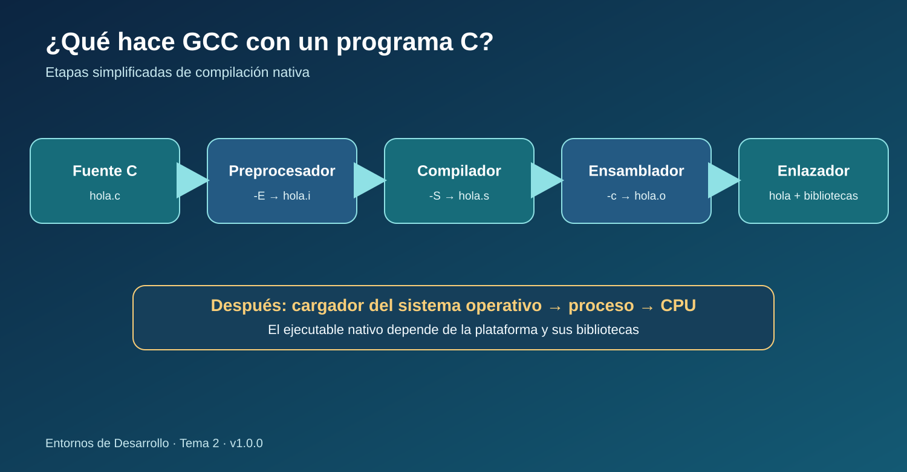
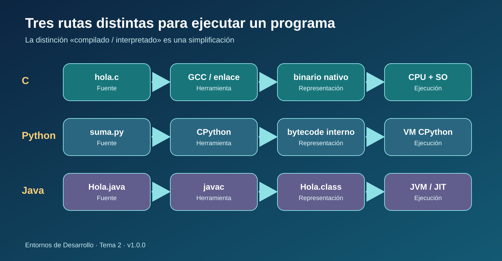
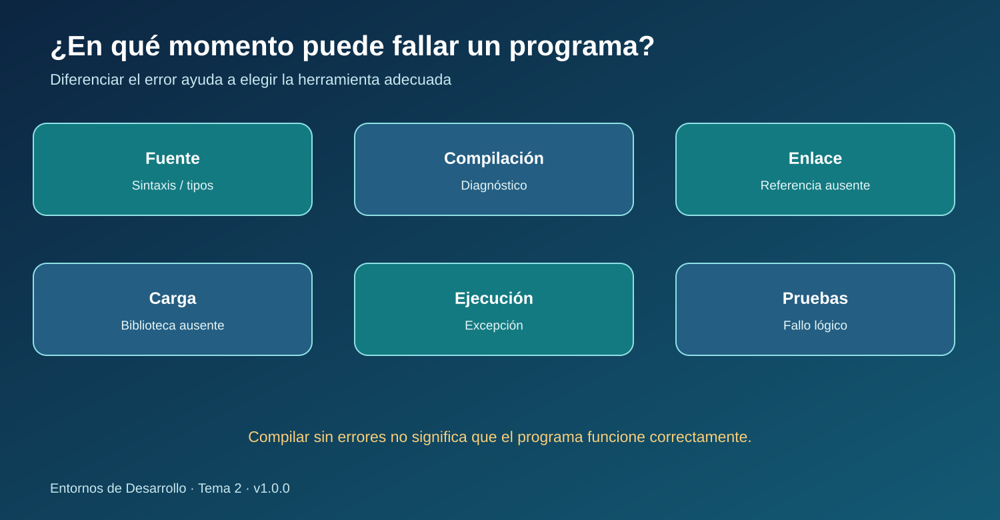

Entornos de Desarrollo · Tema 01
Tema 2. Lenguajes, compiladores, intérpretes y máquinas virtuales
Comprende cómo se crea, prueba y ejecuta software
Tema: v1.0.0 · 23/11/2026
Entornos de Desarrollo · Tema 02
Objetivos de aprendizaje
Tema: v1.0.0 · 23/11/2026
Entornos de Desarrollo · Tema 03
Objetivos de aprendizaje
Tema: v1.0.0 · 23/11/2026
Entornos de Desarrollo · Tema 04
Objetivos de aprendizaje
Tema: v1.0.0 · 23/11/2026
Entornos de Desarrollo · Tema 05
1. ¿Por qué existen tantos lenguajes de programación?
Tema: v1.0.0 · 23/11/2026
Entornos de Desarrollo · Tema 06
1.1. Tres criterios de clasificación distintos
| Criterio | Categorías ilustrativas | Precaución |
|---|---|---|
| Nivel de abstracción | Código máquina, ensamblador, lenguajes de alto nivel | «Alto nivel» no equivale a «interpretado» |
| Paradigma | Imperativo, funcional, orientado a objetos, declarativo | Un lenguaje puede ser multiparadigma |
| Modelo de implementación | Compilación nativa, bytecode con VM, ejecución interpretada/JIT | No clasifica de forma absoluta a un lenguaje |
Tema: v1.0.0 · 23/11/2026
Entornos de Desarrollo · Tema 07
1.1. Tres criterios de clasificación distintos
Tema: v1.0.0 · 23/11/2026
Entornos de Desarrollo · Tema 08
2. Código máquina, ensamblador y lenguajes de alto nivel
Tema: v1.0.0 · 23/11/2026
Entornos de Desarrollo · Tema 09
2. Código máquina, ensamblador y lenguajes de alto nivel
Tema: v1.0.0 · 23/11/2026
Entornos de Desarrollo · Tema 10
3. Las etapas de una compilación nativa
Tema: v1.0.0 · 23/11/2026
Entornos de Desarrollo · Tema 11
3. Las etapas de una compilación nativa
Tema: v1.0.0 · 23/11/2026
Entornos de Desarrollo · Tema 12
Fases de la compilación con GCC

Tema: v1.0.0 · 23/11/2026
Entornos de Desarrollo · Tema 13
3. Las etapas de una compilación nativa
Tema: v1.0.0 · 23/11/2026
Entornos de Desarrollo · Tema 14
3.2. Ejecutar por separado las etapas en Linux
Tema: v1.0.0 · 23/11/2026
Entornos de Desarrollo · Tema 15
3.2. Ejecutar por separado las etapas en Linux
| Orden | Resultado | Qué observar |
|---|---|---|
| -E | hola.i | Texto tras el preprocesador; puede ser extenso por cabeceras |
| -S | hola.s | Instrucciones ensamblador del destino |
| -c | hola.o | Objeto binario; aún no es un programa completo ejecutable |
| Sin opción de parada | hola | Ejecutable enlazado para el sistema de destino |
Tema: v1.0.0 · 23/11/2026
Entornos de Desarrollo · Tema 16
3.2. Ejecutar por separado las etapas en Linux
Tema: v1.0.0 · 23/11/2026
Entornos de Desarrollo · Tema 17
4. El enlazador y las bibliotecas
Tema: v1.0.0 · 23/11/2026
Entornos de Desarrollo · Tema 18
4. El enlazador y las bibliotecas
Tema: v1.0.0 · 23/11/2026
Entornos de Desarrollo · Tema 19
5. Interpretación y bytecode en Python
Tema: v1.0.0 · 23/11/2026
Entornos de Desarrollo · Tema 20
5.1. ¿Interpretado significa «sin compilador»?
Tema: v1.0.0 · 23/11/2026
Entornos de Desarrollo · Tema 21
6. Código intermedio y máquina virtual Java (JVM)
Tema: v1.0.0 · 23/11/2026
Entornos de Desarrollo · Tema 22
6. Código intermedio y máquina virtual Java (JVM)
| Archivo / comando | Función |
|---|---|
| Hola.java | Código fuente |
| javac Hola.java | Compila el fuente |
| Hola.class | Bytecode compatible con la especificación JVM |
| javap -c Hola | Permite inspeccionar instrucciones |
| java Hola | Inicia el entorno de ejecución y el método principal |
Tema: v1.0.0 · 23/11/2026
Entornos de Desarrollo · Tema 23
6. Código intermedio y máquina virtual Java (JVM)
Tema: v1.0.0 · 23/11/2026
Entornos de Desarrollo · Tema 24
7. ¿Qué es una máquina virtual?
Tema: v1.0.0 · 23/11/2026
Entornos de Desarrollo · Tema 25
7. ¿Qué es una máquina virtual?
| Tipo | Qué virtualiza o proporciona | Ejemplo |
|---|---|---|
| VM de lenguaje o proceso | Un entorno abstracto para ejecutar código con ciertas instrucciones y servicios | JVM; máquina virtual de CPython |
| VM de sistema | Un equipo virtual con CPU, memoria, discos y dispositivos para un sistema operativo invitado | VirtualBox, QEMU/KVM |
Tema: v1.0.0 · 23/11/2026
Entornos de Desarrollo · Tema 26
7. ¿Qué es una máquina virtual?
Tema: v1.0.0 · 23/11/2026
Entornos de Desarrollo · Tema 27
Cadenas de ejecución en C Python y Java

Tema: v1.0.0 · 23/11/2026
Entornos de Desarrollo · Tema 28
8. JavaScript: ¿compilación o interpretación?
Tema: v1.0.0 · 23/11/2026
Entornos de Desarrollo · Tema 29
9. Portabilidad, arquitectura y dependencias
Tema: v1.0.0 · 23/11/2026
Entornos de Desarrollo · Tema 30
9. Portabilidad, arquitectura y dependencias
| Recurso | ¿Qué puede cambiar al pasar de plataforma? |
|---|---|
| Fuente C | Normalmente puede recompilarse, pero depende de APIs y bibliotecas usadas |
| Binario nativo | Necesita compatibilidad de arquitectura, SO y ABI |
| Bytecode JVM | Necesita JVM y versión/dependencias compatibles |
| Script Python | Necesita implementación de Python y paquetes compatibles |
| Código JavaScript | Necesita un motor y APIs apropiadas al entorno |
Tema: v1.0.0 · 23/11/2026
Entornos de Desarrollo · Tema 31
9. Portabilidad, arquitectura y dependencias
Tema: v1.0.0 · 23/11/2026
Entornos de Desarrollo · Tema 32
10. Errores: ¿en qué fase se detectan?
| Tipo de problema | Ejemplo | Momento habitual |
|---|---|---|
| Sintaxis | Falta una llave obligatoria en C | Compilador |
| Tipos o semántica estática | Asignación incompatible que el compilador rechaza | Compilación |
| Enlace | Referencia indefinida a función | Enlazador |
| Carga | Falta una biblioteca dinámica requerida | Arranque o carga |
| Ejecución | División por cero no controlada | Tiempo de ejecución |
| Lógica | Programa calcula un descuento equivocado sin fallar | Pruebas y uso |
Tema: v1.0.0 · 23/11/2026
Entornos de Desarrollo · Tema 33
10. Errores: ¿en qué fase se detectan?
Tema: v1.0.0 · 23/11/2026
Entornos de Desarrollo · Tema 34
Detección de errores en cada etapa

Tema: v1.0.0 · 23/11/2026
Entornos de Desarrollo · Tema 35
11. Comparativa final de las tres cadenas
| Aspecto | C con GCC | Python con CPython | Java con JDK/JVM |
|---|---|---|---|
| Fuente | .c | .py | .java |
| Transformación habitual | Compilación nativa + enlace | Compilación interna a bytecode | javac a bytecode JVM |
| Producto intermedio visible | .i , .s , .o si se solicita | .pyc cuando se genera | .class |
| Qué lo ejecuta | CPU + SO sobre binario nativo | Runtime CPython y CPU | JVM y CPU |
| Dependencia relevante | Arquitectura, SO, ABI y bibliotecas | Instalación Python y paquetes | JVM compatible, librerías |
Tema: v1.0.0 · 23/11/2026
Entornos de Desarrollo · Tema 36
11. Comparativa final de las tres cadenas
Tema: v1.0.0 · 23/11/2026
Entornos de Desarrollo · Tema 37
12. Actividades propuestas
Tema: v1.0.0 · 23/11/2026
Entornos de Desarrollo · Tema 38
13. Preguntas de repaso
Tema: v1.0.0 · 23/11/2026
Entornos de Desarrollo · Tema 39
13. Preguntas de repaso
Tema: v1.0.0 · 23/11/2026
Entornos de Desarrollo · Tema 40
13. Preguntas de repaso
Tema: v1.0.0 · 23/11/2026
Entornos de Desarrollo · Tema 41
14. Glosario
| Concepto | Definición |
|---|---|
| ISA | Especificación de las instrucciones que entiende una arquitectura de CPU |
| Preprocesador | Transforma directivas antes de la compilación de C |
| Compilador | Traduce y analiza código de un lenguaje a otra representación |
| Ensamblador | Transforma instrucciones simbólicas a código objeto o máquina |
| Enlazador | Combina objetos y resuelve referencias |
| Cargador | Prepara el programa para iniciar su ejecución |
| Bytecode | Código intermedio de instrucciones para una VM u otro motor |
Tema: v1.0.0 · 23/11/2026
Entornos de Desarrollo · Tema 42
14. Glosario
| Concepto | Definición |
|---|---|
| JVM | Máquina virtual que ejecuta bytecode de la plataforma Java |
| JIT | Compilación de código durante la ejecución |
| ABI | Convenciones binarias para interacción con sistema y bibliotecas |
| Runtime | Componentes de soporte necesarios para ejecutar un programa |
Tema: v1.0.0 · 23/11/2026